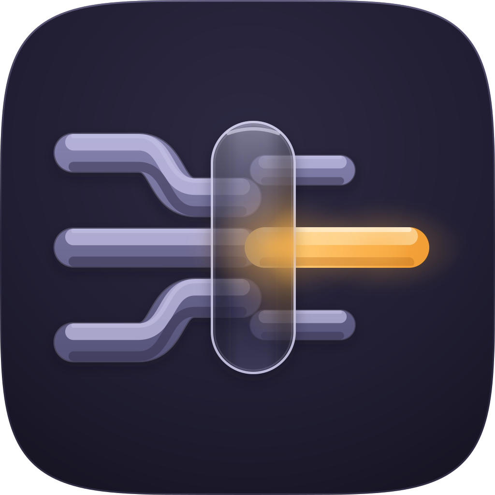
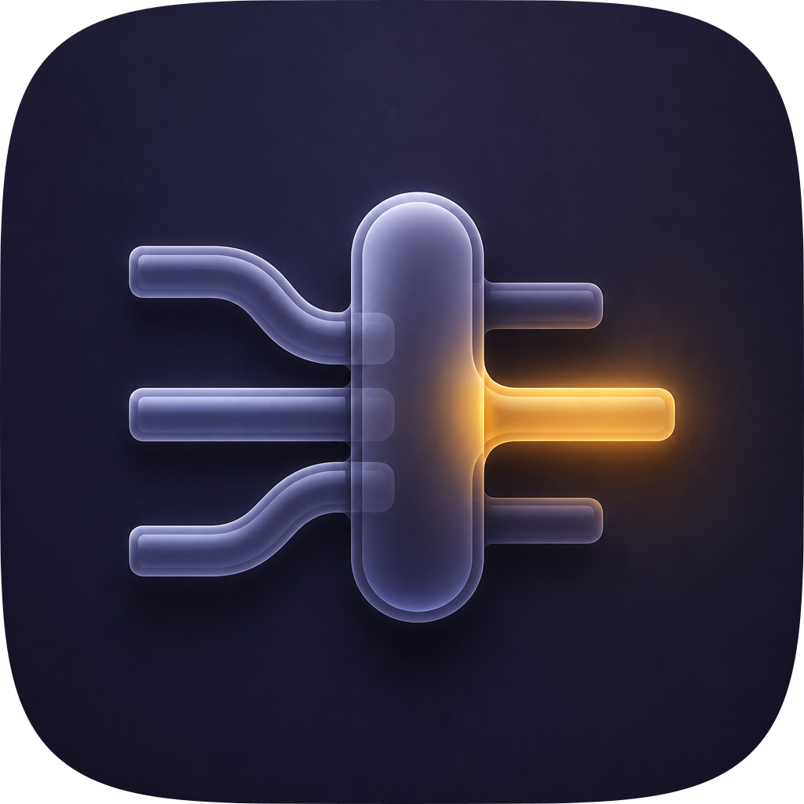
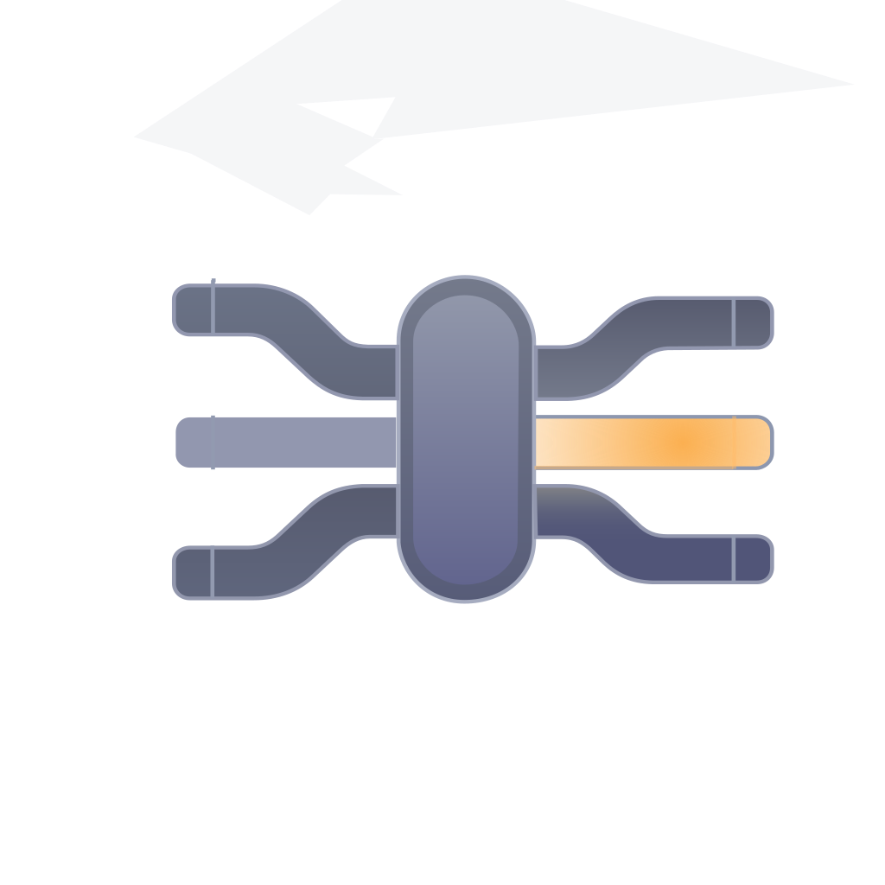
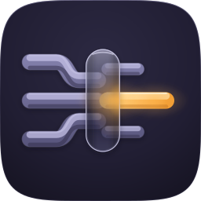
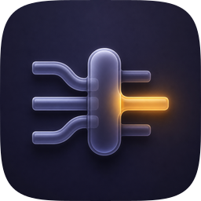
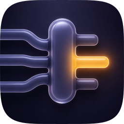
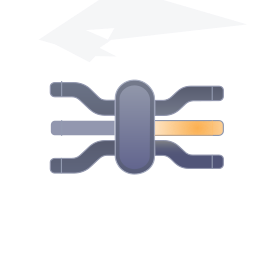

Direction "Tahoe gel-glass, dark register — the manifold" · one shared spec, three engines · every take audited on real renders at 1024 / 128 / 64 / 48 / 32 / 16. The device is subject-mined: three cool-glass conduits converge from the left into one hub, and on the right exactly one branch is lit while two sit dormant. Many-to-one on the way in, lazy-wake on the way out.
Heroes at 1024

A — layered SVG master

C1 — SHIPS as the decorative markC2 — raster, composition fails

B — Arrow vector
The size ladder
Icon variation takes with renders, rubric scores and verdicts
Take
Renders at 128 / 64 / 48 / 32 / 16 css px (2× retina sources), plus the 16px squint magnified
Rubric
Verdict
A · icon-a-manifold.svghand-authored layered SVG — the master

1286448321616 ×6
11 / 12
Passes all four non-negotiables. Four real layers (bg / mid / fg / highlight), identity carried by silhouette and value with the amber as the last 10%, so it survives Dark / Clear / Tinted where a flat raster cannot. Docked on #4: at 16px the three inbound conduits merge into one band and the manifold reduces to "hub plus one lit branch" — still identifiable, but information is genuinely lost. Absorbed from the other engines: the stepped S-jog routing (B and C1 converged on it independently), the all-edge tube rim, and the tightened emission.
C1 · icon.pngGPT Image 2, corpus-referenced — SHIPS as the decorative mark

1286448321616 ×6
10 / 12
The best material in the set and the reason the fidelity loop ran: genuinely translucent frosted hub, tubes that read as round, and emission that lights both the hub's flank and the ground. Fails #10 by construction — it is a flat pre-masked raster and a large share of its identity lives in the glow, which dies under system tinting. Fails #1 marginally: it has no tile of its own, so the squircle had to be applied at audit time. Its values were ported into A over eleven measured rounds; the owner then chose C1 itself for the README and repo tile, where #10 has no compositor to act on it.
C2 · icon-c2-raster.pngGPT Image 2, second take

1286448321616 ×6
7 / 12
Lost on composition, not material. Hard-fails #2: the focal occupies roughly 85% of the tile width and the conduits run off the left edge, so there is no safe zone and the convergence has nowhere to happen. Also fails #10 as a flat raster. It is the most legible take at 32px purely because everything in it is oversized, which is not a virtue the other sizes share.
B · icon-b-arrow.svgArrow 1.1 vector take

1286448321616 ×6
4 / 12
Hard-fails three non-negotiables. #1: no tile at all — the artwork floats on transparency, so there is no mask to design inside. #2: a stray white arrow artefact sits outside the composition in the upper left. #4: thin symmetric bars smear into a spider at 32px. #7 follows from #1, since figure-ground needs a ground. It also read the brief symmetrically — bars entering and leaving in equal number says "a bus", not "many-to-one". Salvaged: its stepped S-jog conduit language, which is a stronger routing read than the smooth curve the master started with, and which C1 arrived at independently.
Shipped: C1 (icon.png), by the owner's call, after the loop closed. This is a decorative mark — a README header and a repo tile, rendered as a PNG by GitHub, with no macOS compositor downstream — so #10 variant robustness, the check C1 fails and A passes, has nothing to act on here. What is left once that check is set aside is material, and C1 holds a more saturated periwinkle in the tubes and a denser glow than the master ever reached. A remains the master and is what to reach for if this ever becomes a real app icon: it is the only genuinely layered take, it is regenerable from build_icon.py where geometry and material are named constants, and it passes all four non-negotiables. Liabilities carried by shipping C1: it is a flat pre-masked raster, so it cannot survive Dark / Clear / Tinted and must never be handed to Icon Composer; it had no tile of its own, so its squircle was applied at audit time and the crop into empty ground is doing work the artwork did not author; and at 1.2 MB it is a heavy README asset next to the 23 KB SVG.
Runner-up: A (icon-a-manifold.svg) — the layered master. Passes all four non-negotiables, four real layers, identity in silhouette and value with the amber as the last 10%. Known liabilities: the 16px read collapses the three inbound conduits into one band, so the manifold idea does not survive menu-bar size; the composition is a wide horizontal band, leaving the upper and lower thirds of the tile empty, which is legal for a wide glyph but is the thing to challenge first if this is ever reworked; and the whole fidelity comparison was against one raster take, so "closer to C1" is not the same as "better in absolute terms".
Fidelity loop — eight accepted rounds against C1, two rejected by the gate.
Scored with fidelity.py at 1024 / 256 / 128 / 32 / 16; each round changed one class only, and every round was Pareto-gated against the previous.
Geometry and material port. C1's S-jog routing, all-edge tube rim, stronger emission and lit hub shoulder, rebuilt into the master.
Emission. The round-1 bloom washed the right third of the tile; radii cut to a third and moved to the tight blur.
Value. The size ladder showed C1 beating the master everywhere small, and the mechanism was value rather than material — the glass and hub sat too close to the ground.
Proportion. C1 carries a far higher hub-to-conduit ratio. First attempt REJECTED: composite gained +0.108 but 16px self-contrast fell 7% because the bars thinned. Re-run with the wider hub and only a light thinning. ACCEPT +0.044.
Depth. Cast shadows under every run — the thing most responsible for C1 reading as objects and the master reading as a diagram. First attempt REJECTED on the same 16px contrast floor; softened, with the glass lifted to compensate. ACCEPT.
Ground and hub level. Ground moved from warm charcoal to deep indigo-navy; the hub's interior was lighter than its rim, which is inverted. ACCEPT +0.089.
Emission, again. White-hot core and a halo that reaches the ground.
Cylindrical shading. The runs read as flat ribbons because one gradient spanned the whole glyph rather than each bar's thickness, and a stroke gradient cannot follow a curve. Rebuilt as masked bands: lit upper face, keyline, shaded underside. ACCEPT +0.075 — the largest material win in the run.
Glass shell. The hub was still a milky slab washing over everything; dropped to a shell with a bright rim and an interior darker than the runs behind it. The live branch shortened and fattened so its glow stays dense. ACCEPT +0.011.
Hub mass. The shell cost the hub weight at 32 and 16, where the reference's hub is the anchor; a little opacity given back. ACCEPT +0.008.
Result: composite 0.5749 → 0.6149 at 1024, 0.5925 → 0.6851 at 256, 0.6519 → 0.7437 at 128, 0.8850 → 0.9071 at 32, 0.9016 → 0.9208 at 16. Pixel diff against C1 fell from 12.98% to 8.48% of the frame.
Stopped here: the last two rounds returned under +0.012 each, and what is left is C1's more saturated periwinkle and a hotter glow, neither of which the 12-point rubric rewards. The rubric outranks the reference, and the 16px contrast floor rejected two rounds the composite would have accepted — which is the guard working, not a nuisance.
Rubric: the 12-point icon audit from icon-directions.md (mask discipline, grid, silhouette, 16px identity, single light model, palette discipline, figure-ground, depth coherence, era coherence, variant robustness, personality, no-text) — checks 1–4 non-negotiable, delivery bar ≥10/12. Raster takes audited on their squircle-masked 1024 versions. Renders produced by python3 audit_sheet.py render . (1024 / 256 / 128 / 96 / 64 / 32 sources); verified by its check subcommand.